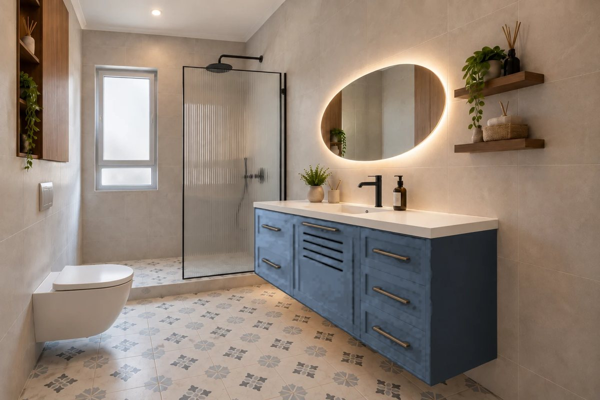
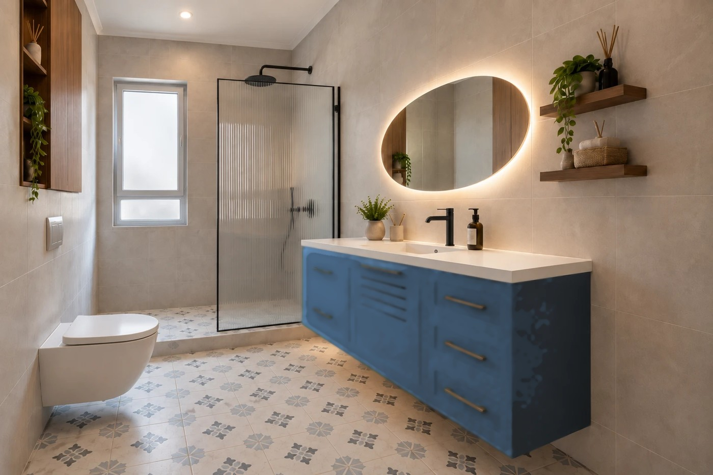
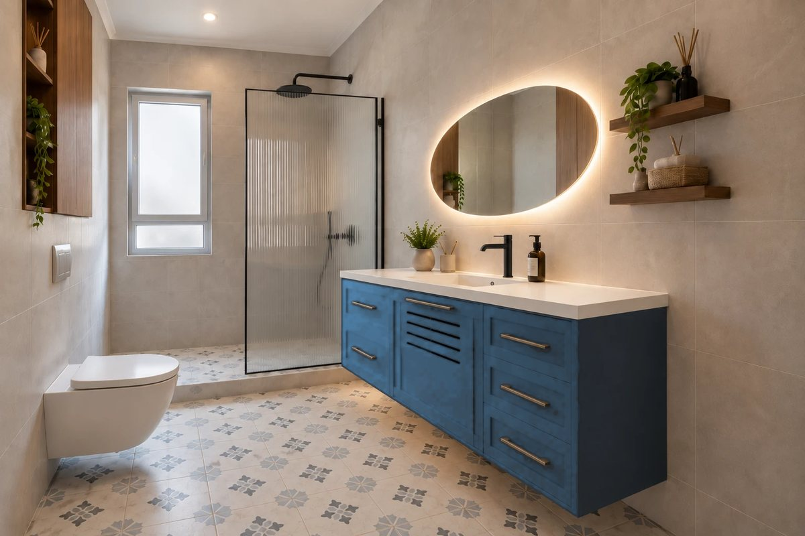

אשל 57 · מקלחת כללית — הילדים
איזה כחול לארון
אותה הדמיה בכמה גרסאות — כולל הגוון של המטבח עצמו. רק גוון הארון משתנה, והוא הוחלף לערכים המדויקים של נירלט — כך שההבדל שרואים הוא ההבדל האמיתי בין המק״טים.
המטבח · נירלט IS 0626 · Blue Depths
הגוון הדומיננטי בבית, נראה מכל הכניסות — להשוואה
למניפה ↗

IS 0626 · Blue Depthsבדיוק הגוון של המטבח — להשוואה
למניפה ↗

IS 0648 · Happy Tuneג׳ינס — אותו גוון כמו המטבח, עמוק ורווי יותר · ההמלצה
למניפה ↗

IS 0655 · Queen of the Nightג׳ינס עם נגיעת פטרול — כמעט זהה ל-0648, ההפרש ביניהם כמעט בלתי נראה
למניפה ↗
IS 2026 · Blue Riseכחול עז — אותו גוון של המטבח, אבל רווי פי שניים וחצי
למניפה ↗
למה דווקא כחול עמוק: דוגמת הרצפה בחדר נדגמה ויצאה #5E7086 — כמעט זהה לכחול המטבח. ארון באותו גוון היה נבלע ברצפה, ולכן הארון צריך להיות אותו גוון אבל עמוק ורווי יותר.
הקירות בחדר אפורים-חמימים #BCBBBA, כך שכחול רווי נראה מולם נקי ולא מתקרר.
הארון מחליף קיר כח: חזית של כ-1.4 מ״ר במקום 6 מ״ר של קיר. ככל ששטח הצבע קטן יותר הוא צריך להיות רווי יותר כדי להיקרא.
לפני שסוגרים: מסך הוא לא לכה. להזמין דוגמת גוון פיזית בלכה מטה לשני הגוונים, ולהניח אותה בחדר עצמו על הרצפה, ליד האריח ובאור יום.